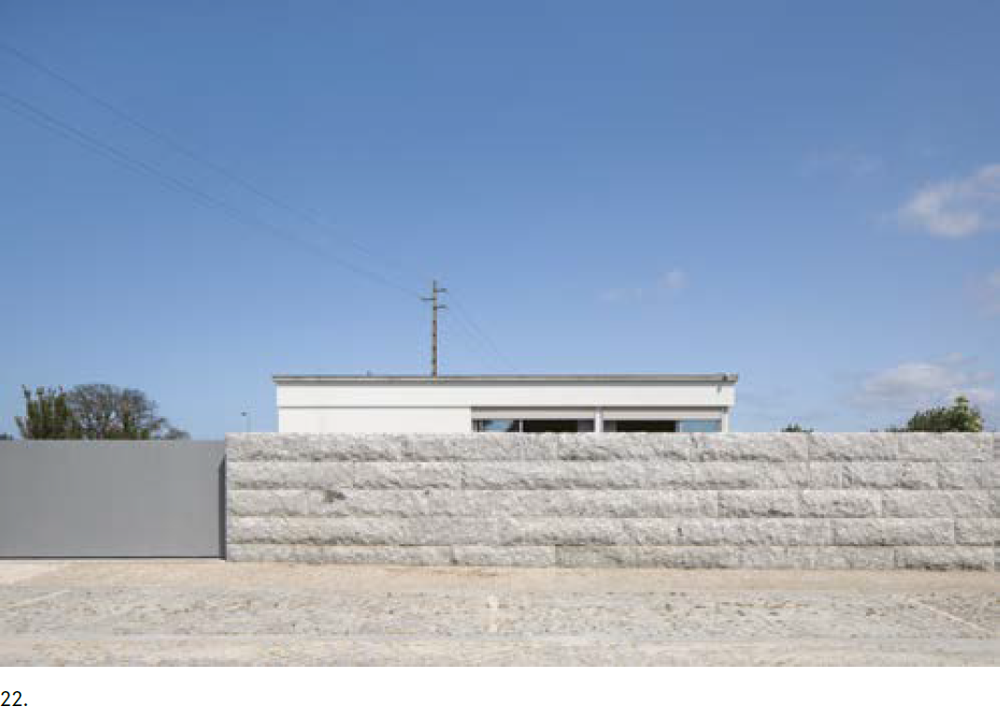
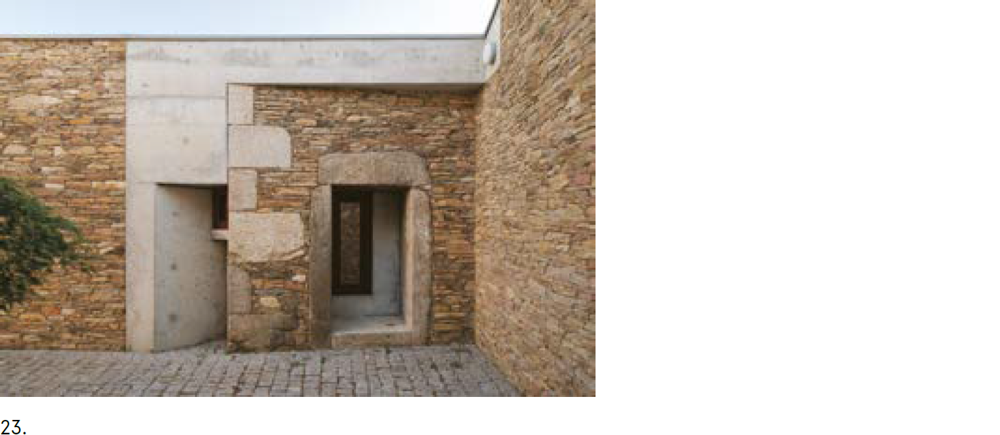
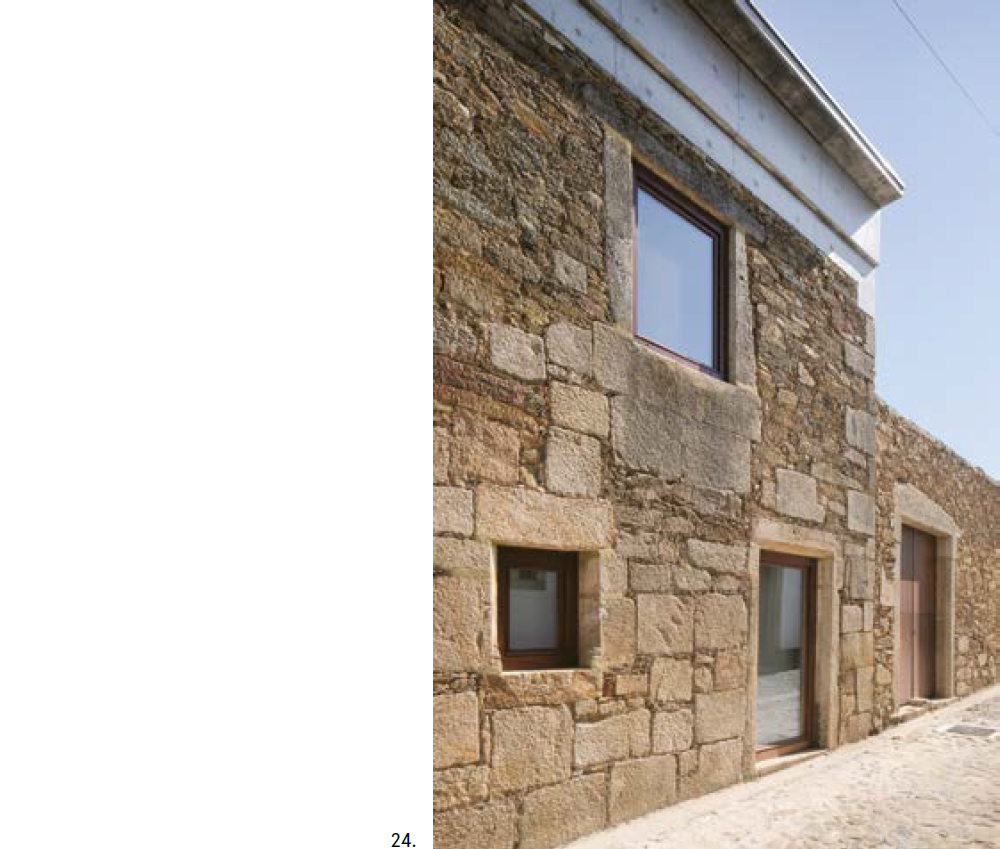
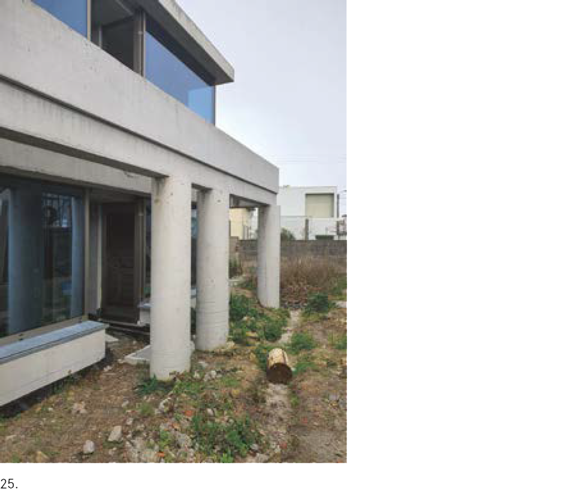
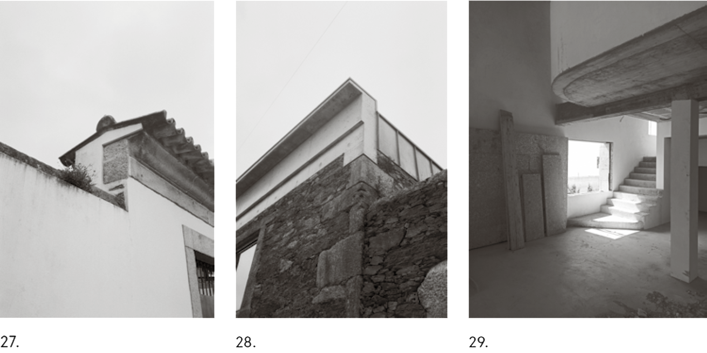

When a temple suddenly appears - Doma magazine
João Paupério / Maria João Rebelo, Atelier Local
 Casa de Férias, view from the street
MANNERIST, MANNERED,
IN THE MANNER OF
Our first visit to ATELIERDACOSTA’s houses
coincided with us discovering Hermann Czech’s
“Essays on Architecture and City Planning”. Although
we have no recollection of ever hearing
the former refer to the latter, both seemed to share
relevant points of view. “The closer architecture
stays to life, the more complex it is; it can only be
‘simple’ when it becomes removed from it”1, wrote
Czech. “Our time is all of history, as it is known
to us”2, he concluded, quoting Josef Frank. This
seems to be a particularly accurate way to describe
the spirit of “Casa Crespo”, the first one we
had the chance to encounter. From the exterior,
this house does not stand out from the surrounding
suburban “villas”, except for the fact that its
façades show an exceptional care for composition;
at least for the trained eye of fellow architects.
On the contrary, once inside, it is impossible to
remain indifferent to the exquisite anachronism
of its octagonal central space, or to the baroque
diagonals unfolding in its rear façade. Surprisingly,
Borromini has found his way to the periphery
of a peripheral city, of a peripheral country. Yet,
as is characteristic of their work, this reference is
not intended to remain a literal quotation, i.e. to
appear in the manner of Borromini. Rather, it is
used as a found and recycled formal device in order
to organise a complex spatial structure for an
otherwise ordinary suburban house.
Casa de Férias, view from the street
MANNERIST, MANNERED,
IN THE MANNER OF
Our first visit to ATELIERDACOSTA’s houses
coincided with us discovering Hermann Czech’s
“Essays on Architecture and City Planning”. Although
we have no recollection of ever hearing
the former refer to the latter, both seemed to share
relevant points of view. “The closer architecture
stays to life, the more complex it is; it can only be
‘simple’ when it becomes removed from it”1, wrote
Czech. “Our time is all of history, as it is known
to us”2, he concluded, quoting Josef Frank. This
seems to be a particularly accurate way to describe
the spirit of “Casa Crespo”, the first one we
had the chance to encounter. From the exterior,
this house does not stand out from the surrounding
suburban “villas”, except for the fact that its
façades show an exceptional care for composition;
at least for the trained eye of fellow architects.
On the contrary, once inside, it is impossible to
remain indifferent to the exquisite anachronism
of its octagonal central space, or to the baroque
diagonals unfolding in its rear façade. Surprisingly,
Borromini has found his way to the periphery
of a peripheral city, of a peripheral country. Yet,
as is characteristic of their work, this reference is
not intended to remain a literal quotation, i.e. to
appear in the manner of Borromini. Rather, it is
used as a found and recycled formal device in order
to organise a complex spatial structure for an
otherwise ordinary suburban house.
Of course, there is always the risk that these formal
games will be read as futile gimmicks, designed
by an over-mannered architect. Or that
they will not be “read” at all. What is extraordinary
about these gestures, however, is that they
are by no means gratuitous. They contribute to
framing and establishing a succession of spaces
defined by their qualities rather than their functions.
With low and high ceilings, wide or narrow
rooms, views of the horizon, interior patios
or simply other interiors: there is always a surprising
passage to be discovered. The kitchen is
both in the living room and separate. The living
room can be in the dining room and vice versa.
Bedrooms retain their intimacy through secret
vestibules which open contradictorily onto the
more “public” areas. The house has an architecture
that is not only made up of rooms, nor is it
exactly a plan libre. It is a synthesis of both: a kind
of raumplan, but not quite. It is a structural grid
within which disruptions are organised. In any
case, it is an ingenious multiplication of possibilities
or what Czech would call the attitude of mannerism:
“one of intellectuality, of consciousness;
also, a sense of the irregular and the absurd, that
breaks away from pre-established precepts”.3
Unfortunately, when we visited the house, what
appeared to be the first scene of a production of
the “Poor Rich Man” was taking place. A team of
decorators was furnishing the house from one end
to another in the latest soap-opera neo-bourgeois
style. Defining precise functions and neutralising
any sense of potential or possibility. As Loos wrote,
“the only thing left for [the client] was to learn how
to walk around in his own dead body”.4



(22)- Casa Lote 7, view from the steet.
(23), (24)- Casa em Rates: view from the street /
view from one of the patios.
THE VERNACULAR AND THE ERUDITE
ARE ONE AND THE SAME.
On the basis of Peschken’s “Temple and Democracy”,
Philippe Villien has built a theoretical bridge
between the vernacular architecture of granite
granaries and the erudite architecture of Doric
temples. His aim was to show that the leap between
the two may have been made by transcription,
rather than by rupture or innovation.5 According
to this hypothesis, the Greek triglyphs would correspond
to the traces of the granaries’ ventilation
panels. Both Corinthian and Ionic capitals would
be formal heirs to those ecological devices that
protect crops from climbing insects, such as the
protrusions that top the columns of Portuguese
espigueiros. Not to mention, of course, the translation
between the form of classical pediments and
the simple need to drain rainwater from the roofs.
This perspective is particularly interesting as it
unveils a potential nexus between utility and effect,
functionalist reason and ornamental fruition.
A similar understanding of this affinity was also
patent, for instance, in Alison & Peter Smithson’s
work illustrated in “Climate Register”.6 A small
book presented their work, with an emphasis on
the impact that climate devices played in both the
technical rationality and the architectural grammar
of their proposals. A look at the façades of ATELIERDACOSTA’s
reveals the same kind of sensibility.
Perhaps the case in which this tension is
most illustrative is the (oversized) concrete cornice
of “Casa Rates”, built on top of an ordinary slate
wall. Cornices are a clear historical example of this
superposition of utility and effect. In this case, a
particularly sophisticated concrete element, which
at first glance could have come from a nearby demolished
monastery (as is the case of an existing
Romanesque church capital), sits on top of an otherwise
rudimentary construction. The fact that
concrete fits into the existing cornerstones emphasises
this ambiguity. The same goes for the geometric
irregularity of its floor plan, which leaves
us wondering what already existed and what has
truly been added. And yet, be it a temple or a modest
farmhouse, the mundane problem of preventing
water from running down a façade is still an
excellent pretext for crowning a building.
This desire to manipulate, exaggerate, or simply
compose a façade out of the need for banal and
utilitarian elements (which often conceded an undesirable
role to architecture) is not exclusive to
their “Casa Rates”. Take, for instance, “Lote 7”, where the high relief of a banal ETICS system
draws a frieze around the whole house, emphasised
over the windows in order to hide the house’s
shading system. A frieze which is topped with
an expressive concrete, coping to manage, once
again, rainwater dripping. Or else, the importance
of the blinds now visibly applied over the wooden
façades of “Casa Gemeses”, where the weather
blends with the concrete foundation, in a unified
soft grey interrupted only by the most beautiful
orange frames. Or even still, the projected concrete
porticoes, which act as brise-soleils and structural
support for the awnings that regulate the exposure
of “Casa Artur” to sunlight. Through these operations,
the milieu crystallises into matter and architecture
reveals its ancestral relationship with a
deep understanding of the word ecology.



(25)- Casa Artur, view from the street.
(26)- Casa César, view from the east.
(29)- Casa César, view of the stairs.
LEARNING TO THINK FROM THOSE
WHO CAN MAKE
One of the misunderstandings on which architecture
has been lying for centuries, particularly
since the classical Renaissance, has to do with the
promotion of a strict division between intellectual
and manual labour on the building site; a process
of abstraction that only seems to have accelerated
since the advent of capitalism. As it goes,
there are those in charge of design7 and those who
execute what the former have imagined: however
absurd these images may be from the producers’
point of view. Of course, our practical experience
has taught us that the opposite is true and almost
everyone involved in the construction process uses
elementary drawings as a tool for thinking. Unlike
bees or spiders, construction workers plan ahead
in their heads, which, according to Marx’s wellknown
formulation, indicates they are not so far
from being architects themselves. Too often, the
main difference is that the formers’ approaches to
design are much more rational and supported by
material reality than those of the latter.
Another dichotomy that restrains the progress of
architectural thought is the socially constructed
idea of the existence of a high and erudite culture, to
which architecture belongs, as opposed to a lower,
popular culture to which every other minor form
of construction should be confined. On the contrary,
the paradoxical position our generation
finds itself in is that architecture seems to have
finally reached out to classes that were excluded
from it not so long ago. Both on the side of
practitioners and commissioners, architecture no
longer concerns only the classes with the most
(economic or cultural) capital, nor the most underprivileged,
to whom their philanthropic or
utopian idealism has historically been addressed.
This, of course, does not mean that everyone in
these other intermediate classes has made it into
architecture. In many cases, architecture is still
perceived as nothing more than a bureaucratic
procedure to be fulfilled, an inconvenience by
decree. The ability to bring architecture to every
corner of a city that seems to have become an infinite
periphery depends on the ability to build
intellectual bridges. The opposite is to adopt a
condescending or patronising attitude, reducing
clients to a bunch of ignorant people.
As we have previously argued regarding the
work of FALA, we believe that these peripheries
have been revealing the inventive spirit of their
inhabitants for decades, for those willing to pay
attention.8 Benefits come from making architectural
design an intellectual apprenticeship for
both parties. A perfect example of what we are
trying to achieve is “Casa César”. Starting from
a client’s preconception — “to build a stone house
with a pitched roof” — the Atelier was forced to
learn the economic and ecological relevance of
this type of construction, even today, if considered
from the subjective perspective of its local
production. From the exterior, it is almost impossible
to determine the era in which “Casa César”
has been conceived. It’s even doubtful whether or
not an architect was actually involved in its construction.
Each element seems to reveal the sensibility
of neo-popular architecture, such as the
way rainwater is handled through a “beirado à
portuguesa”. Although as soon as we take a closer
look at the floor plans, we once again discover the
same intellectual ambition and confidence in the
spatial complexity of Baroque architecture.
In 1960, even before writing The Architecture of
the City, Aldo Rossi was already concerned with
“the problem of the periphery”9, as he considered
it to be “the future of the city”10. If we take a look
at the Portuguese landscape, it will be easy to see
that he was not wrong about it. And yet, within the
disciplinary field of architecture, especially from
a practical point of view, little has been produced
since in order to understand its structures and
transform them in their most basic implications.
In our opinion, ATELIERDACOSTA has already
made significant contributions. After all, even the
periphery needs its temples. And in this respect,
ATELIERDACOSTA seems to have what it takes.
(1)- Herman Czech. “A Self-critique of Modernism” (1995),
in Essays on Architecture and City Planning. Zurich:
Park Books, 2019, p.218.
(2)- Ibid., p. 221.
(3)- Herman Czech. “Mannerism and Participation” (1977),
in Essays on Architecture and City Planning. Park Books,
2019, p.123.
(4)- Adolf Loos, “Poor Rich Man” (1900), In Creating your home
with style. Metroverlag, 2013, p.83.
(5)- Philippe Villien, “Le dorique bien tempéré”, in Marnes,
vol.3, May 2014, pp.328-341.
(6)- Peter Salter & Peter Smithson, Climate Register:
four works by Alison & Peter Smithson, Architectural
Association, 1995.
(7)- Apropos, cf. Pier Vittorio Aureli, Architecture and
Abstraction, The MIT Press, 2023.
(8)- João Paupério & Maria Rebelo, “Breves notas para uma teoria
da prática do ordinário”, Punkto, #38, May 2023.
(9)- Aldo Rossi, “Il problema della periferia nella città moderna”,
Scritti scelti sull’architettura e la città, Clip, 1957, p.112.
(10)- Aldo Rossi, “La città e la periferia”, Ibid, p.158.
PREVIOUS
|
NEXT
↑